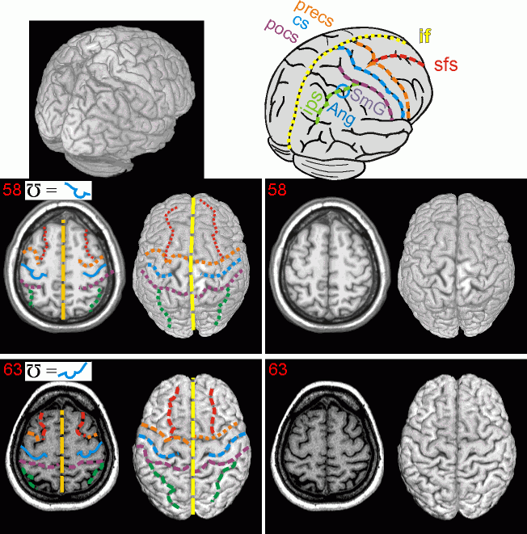

Atlas
Links
| The central sulcus and surrounding landmarks | Introduction Atlas Links |
Overview
The sylvian fissure and interhemispheric fissure are easy to spot from the approriate coronal or axial view. However, the central sulcus (cs) can require a bit more training to detect. One of the best ways to find the cs and other major sulci is to look at a posterior 3/4 rendering of the brain as I show here. From this view you should be able to quickly identify the Interhemispheric Fissure (IF), superior frontal sulcus (sfs) and the intraprairetal sulcus (ips), as shown on the diagram. The sfs and ips are especially useful for finding the cs. The anterior end of the ips is the postcentral sulcus (pocs) and the posterior junction of the sfs is near the precentral sulcus (precs). One word of caution: one of the most salient features of the ips is the dorsal junction of the supramarginal gyrus (SmG) and Angular Gyrus (AnG), shown with a cyan circle in the diagram. This junction can often look like the pocs - it is important to keep tracing the ips anteriorly after this landmark in order to find the pocs. From this view, the cs lies between the pocs and the precs.
The cs can also be found by examing axial slices, as described by Nicola Petitti in a powerpoint presentation. Looking at a normalized brain, the cs is easiest to spot on an axial slice with a Z-coordinate around 60mm. At this position the sfs can typically be seen transecting the precs, and the ips can often be seen to connect with the pocs. From this view, the cs usually looks more crooked than the flanking precs and pocs - it often contains an 'inverted omega' shape - which is the landmark for the precentral gyrus's motor-hand area (see Yousry et al, Brain, 1997, v120, 141-157). Note that the precentral gyrus is usually larger than the postcentral gyrus. Furthermore, at this slice, the cs is usually deeper and more continuous than either the precs or pocs. Identifying the precs, cs and pocs is useful, as these areas indicate the location of the primary motor cortex. The precentral gyrus (the gyrus between precs and cs) is involved with motor control (e.g. reaching) and the postcentral gyrus (between cs and pocs) is involved with sensation (e.g. touch). For example, stimulating the motor hand area with a TMS wand will cause the hand to flinch.
As mentioned in the introduction, brains vary a lot between individuals, even after normalization. All of the tips described here are 'rules of thumb' that will work for most brains.

Chris Rorden, 13 October 2002